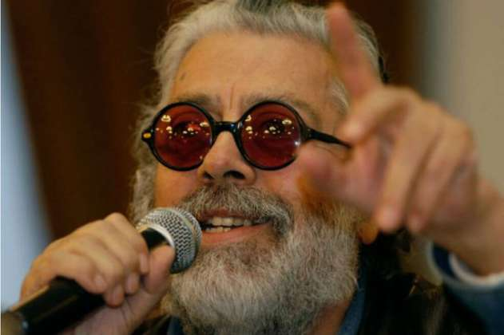

Nació el 22 de mayo de 1937 en La Plata, provincia de Buenos Aires y su nombre completo es Rodolfo Enrique Cabral Camiñas.
En 1970 grabo su composición "No Soy De Aquí, Ni Soy De Allá" dándole fama.
Obtuvo un reconocimiento por su constante llamado a la paz y al amor en 1996 la Organización de las Naciones Unidas para la Educación, la Ciencia y la Cultura (UNESCO) que lo declaró "Mensajero Mundial de la Paz".
El cantautor argentino fue asesinado el 9 de julio de 2011 en el hotel Grand Tikal Futura ubicado en La Calzada Roosevelten de Ciudad de la Guatemala cuando se dirigía con su representante al aeropuerto internacional La Aurora, por el Cartel de Sinaloa quienes iban a por el empresario nicaragüense Henry Aquiles Fariña Fonseca y desconocian que lo acompañaba el cantautor argentino.
Entrevista al Artista
Encuentra más información
